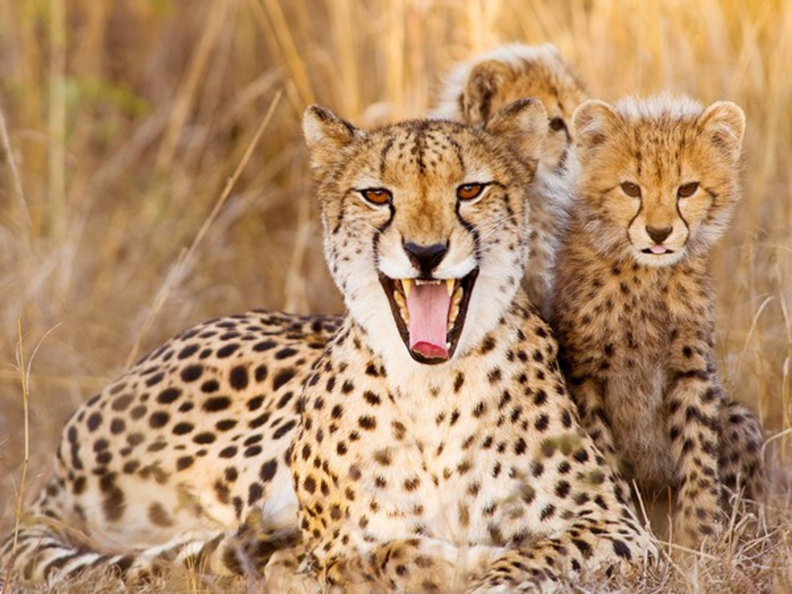

Chitas
El guepardo o chita (Acinonyx jubatus)1 es una especie de mamífero carnívoro de la familia de los félidos. Es el
único representante vivo del género Acinonyx. Caza gracias a su vista y a su gran velocidad. Es el animal
terrestre más veloz, ya que alcanza una velocidad punta de 29 m/s (104 km/h) a lo largo de un recorrido de 201.2
metros.4 Las hembras pueden tener hasta cinco cachorros por camada. Su presa principal es la gacela de Thomson

Es un felino de gran tamaño: mide entre 110 y 150 cm de longitud, a lo cual hay que añadir una cola de entre 55
a 80 cm.6 Su altura a la cruz es de 74 a 90 cm y pesa entre 35 y 60 kg: los machos son de un tamaño ligeramente
mayor que las hembras.6
El guepardo es uno de los felinos que tienen mayor riesgo a desaparecer puesto que sus cifras se han
reducido a más del 50% en los últimos veinticinco años y su hábitat ha desaparecido un 90%. En el año 2020
se estimó que quedaban menos de siete mil guepardos en libertad.5
Cuando nace, la cría tiene una abundante melena clara sobre el dorso, en contraste con la mayoría de los
felinos. Este es un mecanismo evolutivo que hace que se puedan camuflar con el entorno en una edad en la que
el animal es extremadamente vulnerable
El nombre guepardo (guépard en francés, ghepardo en italiano y Gepard en alemán) proviene del griego
γατόπαρδος gatopardos y del latín medieval gattus pardus, con el significado de «gato leopardo»